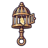

นกขมิ้นผีในกรง
มอนธาตุวิญญาณ Lv 62–72
เจอที่
| แมพ | โซน | Lv | ภูมิภาค |
|---|---|---|---|
| ค่ายคนงานใต้ดิน | 62–68 | แดนใต้สีแดง | |
| ค่ายคนงานใต้ดิน | 64–72 | แดนใต้สีแดง | |
| ค่ายคนงานใต้ดิน | ปล่องลิฟต์เหมือง | 68–70 | แดนใต้สีแดง |
| ค่ายคนงานใต้ดิน | ปล่องลิฟต์เหมือง | 70–72 | แดนใต้สีแดง |
ค่าสถานะตามเลเวล
| Lv | HP | ATK | DEF | MDEF | EXP | Job |
|---|---|---|---|---|---|---|
| 62 | 17,789 | 115–172 | 17 | 15 | 78 | 59 |
| 67 | 22,356 | 126–189 | 19 | 16 | 84 | 63 |
| 72 | 27,374 | 138–206 | 20 | 17 | 89 | 67 |
ตีด้วยธาตุไหนดี
แรงขึ้น: วิญญาณ ×1.25
เบาลง: ไม่มีธาตุ ×0.25
วัตถุดิบที่ดรอป
| ของ | โอกาส | |
|---|---|---|
| ขนนกขมิ้นผี | 55% | 1 ชิ้น (15% ได้ 2) |
อุปกรณ์ที่ดรอป (1)
| ของ | โอกาส |
|---|---|
 กระดิ่งวิญญาณนกขมิ้น | 0.12% |
สกิล
ยิงกระจาย (Lv 25+) · ยิงกระจาย (Lv 60+) · ปาตกใส่ (Lv 60+)